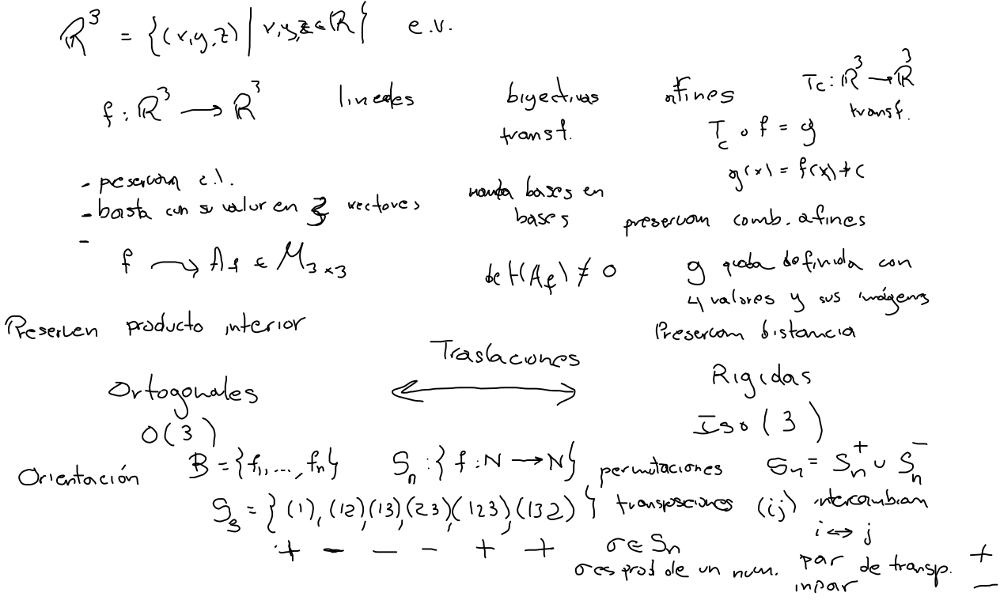
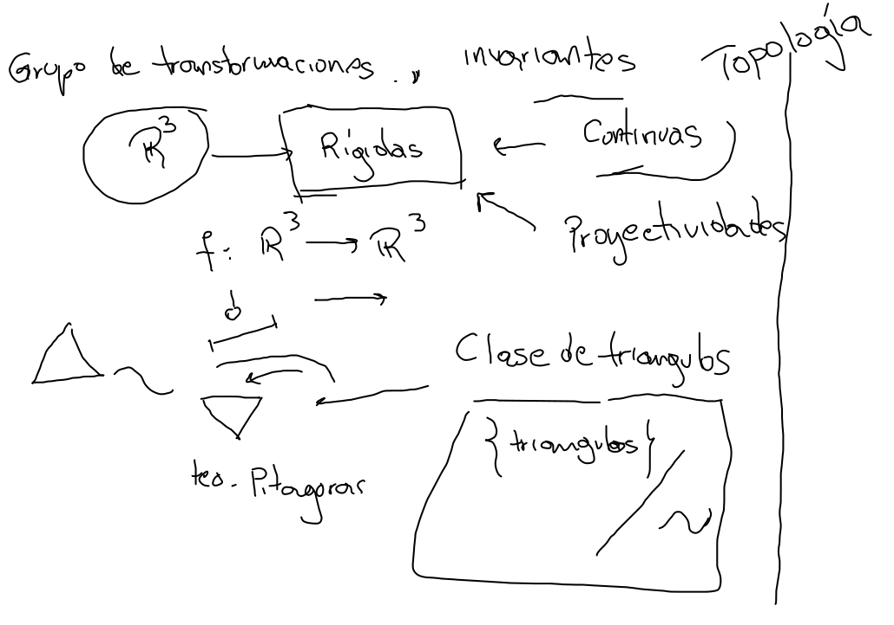

Espacio
Transformaciones
- Funciones lineales
- Afines + Traslaciones.
- Ortogonales Preservan producto interior y pueden preservar o invertir la orientación.
- Isometrías Preservan distancia y también pueden preservar o invertir la orientación.


Clasificación
Buscamos clases de equivalencia cuando la relación de equivalencia esta dada en términos de algún grupo de transformaciones del espacio. Así se propone que
La geometría es el estudio de invariantes bajo
grupos de transformaciones
